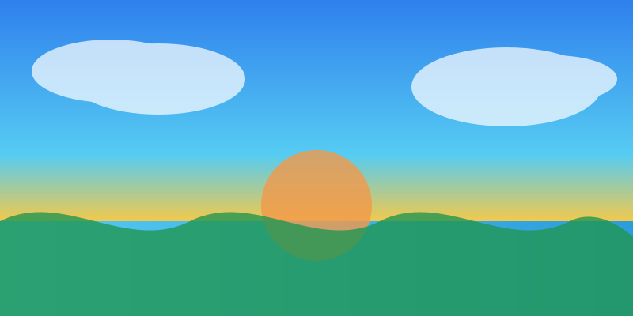

🌍
Çevresel Koruma
Kıyı kentleri ve iç bölgelerde çevre dostu politikaları destekleyen projeler geliştiriyoruz.
MEEN, çevresel koruma, ekonomik kalkınma, eğitim ve tarım alanlarında yerel yönetimler ile üniversiteleri bir araya getirerek Akdeniz havzasında pozitif etki yaratmayı hedefler.

Akdeniz Çevresel ve Ekonomik Ağı (MEEN), sürdürülebilir kalkınma hedefleri doğrultusunda şehirlerin ihtiyaç duyduğu alanlarda işbirlikleri kurarak daha dayanıklı, kapsayıcı ve yenilikçi bir bölgesel ekosistem oluşturmayı amaçlar.
Kıyı kentleri ve iç bölgelerde çevre dostu politikaları destekleyen projeler geliştiriyoruz.
Üyelerimiz arasında sürdürülebilir finansman ve bilgi paylaşımı için güçlü konsorsiyumlar kuruyoruz.
Teknoloji ve inovasyon odaklı çözümlerle ekonomik ve sosyal kalkınmayı hızlandırıyoruz.
MEEN, üye belediyelerin ortak karar mekanizmalarıyla şekillenen bir yapıdır. Stratejik hedefler, yönetim kurulu ve çalışma grupları aracılığıyla hayata geçirilir.
Üye belediyeler, iki yıllık dönem için başkan ve yönetim kurulunu demokratik oylamalarla belirler.
Yerel yönetimler ve üniversiteler, stratejik hedeflerimizle uyumlu projelerini paylaşarak başvuruda bulunur.
Komiteler, projeleri sürdürülebilirlik, etkisi ve işbirliği potansiyeline göre değerlendirir.
Şeffaf kriterler temelinde fonlar dağıtılır ve düzenli raporlama ile ilerleme takip edilir.
MEEN, Akdeniz havzasındaki ülkelerin yanı sıra Portekiz ve Ürdün'deki tüm yerel yönetimlere ve üniversitelere açıktır.
Üyelik başvuruları yıl boyunca kabul edilir ve değerlendirme süreci ortalama 30 gün sürer.
MEEN topluluğu, farklı disiplinlerden uzmanların dayanışmasıyla güçleniyor. Aşağıdaki temsilcilerimiz, ağımızın sürdürülebilir kalkınma hedeflerini ileriye taşıyan öncü isimlerdir.
Üyelerimiz arasında kurduğumuz işbirlikleri ile projeleri destekliyor, fon bulmalarını kolaylaştırıyor ve bilgi paylaşımını teşvik ediyoruz.
Enerji verimliliği, çevresel koruma ve iklim dayanıklılığı projelerine stratejik destek sağlıyoruz.
Yerel girişimleri güçlendirmek için finansman ağları ve ortaklıklar kuruyoruz.
Dijital dönüşüm, veri paylaşımı ve ortak eğitim programları ile bilgi ekosistemini zenginleştiriyoruz.
Üyelerimiz, Akdeniz kıyı şeridi ve komşu bölgelerde çevresel ve ekonomik dönüşümü hızlandırmak için birlikte hareket ediyor.